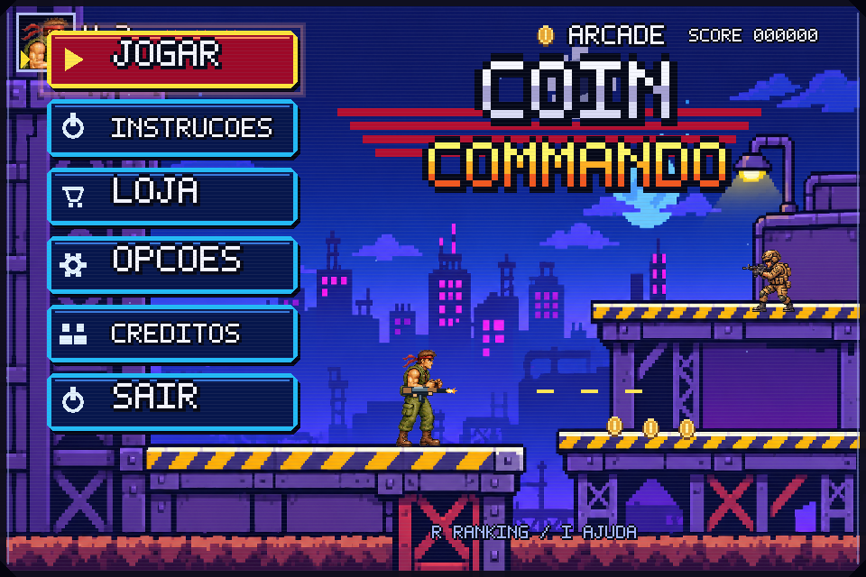
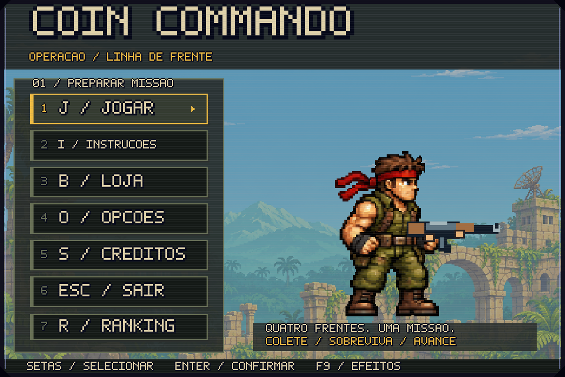
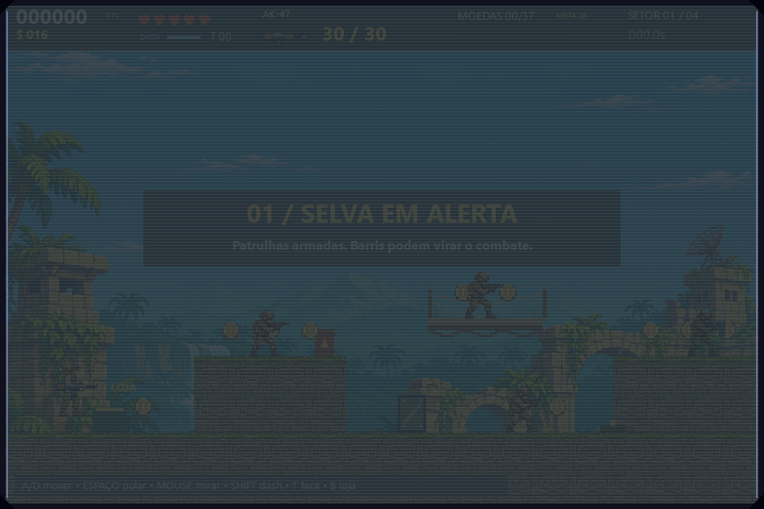
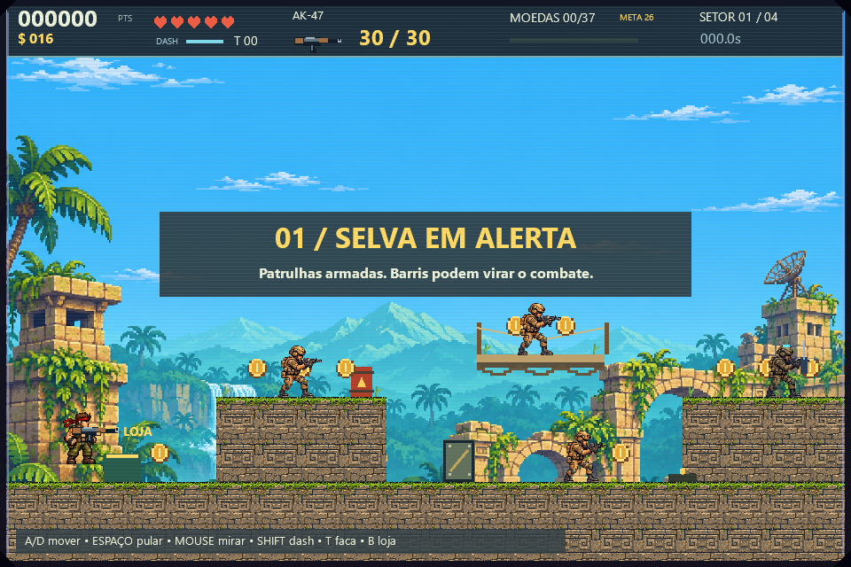
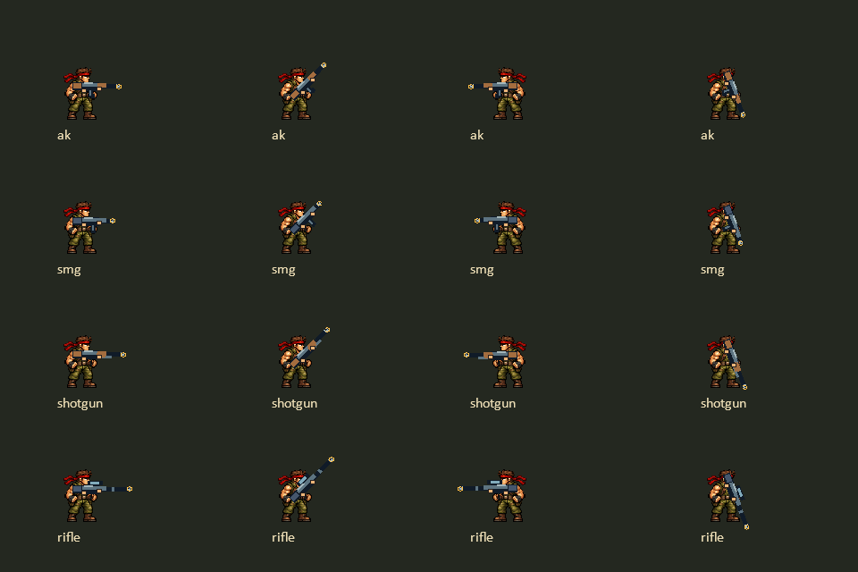
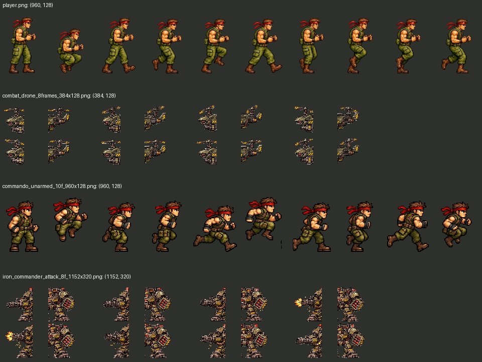
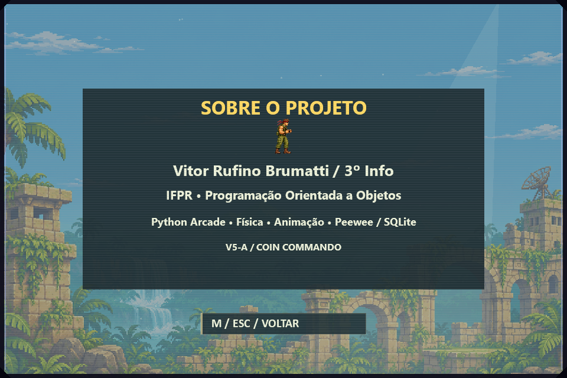

960×640, Windows nativo. Capturas estáticas revisadas; não substituem partida manual ou teste de áudio.


Antes capturado com fade de entrada; depois sem fade. Não é comparação de luminância controlada.


Círculos amarelos marcam o muzzle geométrico, apenas nesta evidência.

Drone/boss têm cortes incorretos na grade horizontal sugerida pelo nome; permanecem fora do runtime.

